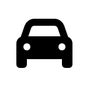
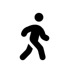

You choose the moment
By default your location is read at exactly two points you decide on — when you start your timer, and when you end it.
A community-powered app to quickly and easily share and find where to get in line, current wait times, and other useful US/Mexico border-crossing information.
Get the appSee the current wait time, hours of operation, and the estimated or shared starting point of the line on the map — then get directions straight to it.
How it worksNorthbound waits come from official CBP data blended with live community reports. Southbound, where no official feed exists, they come from traffic conditions combined with submissions from the people crossing.
Navigate through the available ports, lanes and crossing methods. Each mode has its own lanes, hours and waits.

Passenger vehicles
PedestrianTap “I'm in line here” when you join, then swipe to confirm. Your wait instantly updates the line's status for everyone else — and theirs updates yours.
Start sharingUse it as a guest for as long as you like. Creating an account adds automatic sign-in and keeps a record of your submissions — worth it whenever you're ready.
Try it freeKnowing where a line starts is only useful if sharing it never costs you your privacy. border asks for the least it can, and puts every choice in your hands.
By default your location is read at exactly two points you decide on — when you start your timer, and when you end it.
You can allow background location so the app ends your timer on its own once you've crossed. Entirely optional, and off until you turn it on.
Fully translated in English and Spanish, switchable whenever you like.
Open the app and find the line's latest information by navigating through the available ports, lanes, and crossing methods. You'll be able to see the current wait time, hours of operation, the estimated or shared starting point of the line on the map, and when the information was last updated.
First, make sure you're not driving and it's safe to use the app. When you join a line, open the app and find its corresponding card. Confirm you're viewing the correct port, line type, and crossing method. Tap “I'm in line here,” adjust details if needed, then swipe right to confirm your submission. This instantly updates the line's status for others.
Tap the blue-tinted transparent circle on the map. This will allow you to choose your preferred navigation app and receive directions to that location.
No, you can use the app as a guest.
Creating an account allows automatic sign-in and lets you keep a record of your submissions. This feature will be expanded in a future release.
Free on iPhone and Android, in English and Spanish.